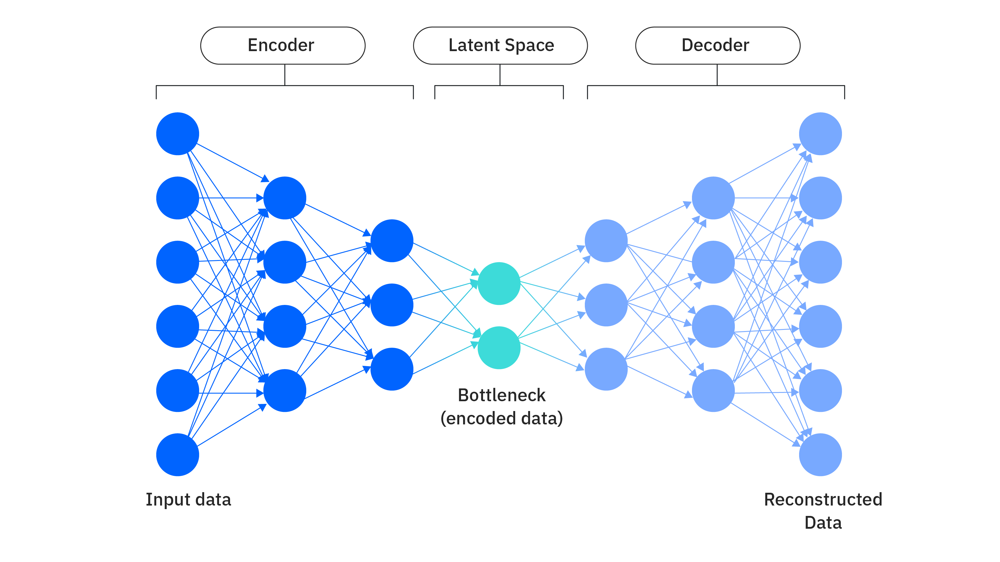

What is AI?
Artificial intelligence (AI) is technology that enables computers and machines to simulate human learning, comprehension, problem solving, decision making, creativity and autonomy. Applications and devices equipped with AI can see and identify objects. They can understand and respond to human language. They can learn from new information and experience. They can make detailed recommendations to users and experts. They can act independently, replacing the need for human intelligence or intervention (a classic example being a self-driving car).
But in 2024, most AI researchers, practitioners and most AI-related headlines are focused on breakthroughs in generative AI (gen AI), a technology that can create original text, images, video and other content. To fully understand generative AI, it’s important to first understand the technologies on which generative AI tools are built: machine learning (ML) and deep learning.

Deep Learning
Deep learning is a subset of machine learning that uses multilayered neural networks, called deep neural networks, that more closely simulate the complex decision-making power of the human brain. Deep neural networks include an input layer, at least three but usually hundreds of hidden layers, and an output layer, unlike neural networks used in classic machine learning models, which usually have only one or two hidden layers.
These multiple layers enable unsupervised learning: they can automate the extraction of features from large, unlabeled and unstructured data sets, and make their own predictions about what the data represents. Because deep learning doesn’t require human intervention, it enables machine learning at a tremendous scale. It is well suited to natural language processing (NLP), computer vision, and other tasks that involve the fast, accurate identification complex patterns and relationships in large amounts of data. Some form of deep learning powers most of the artificial intelligence (AI) applications in our lives today.